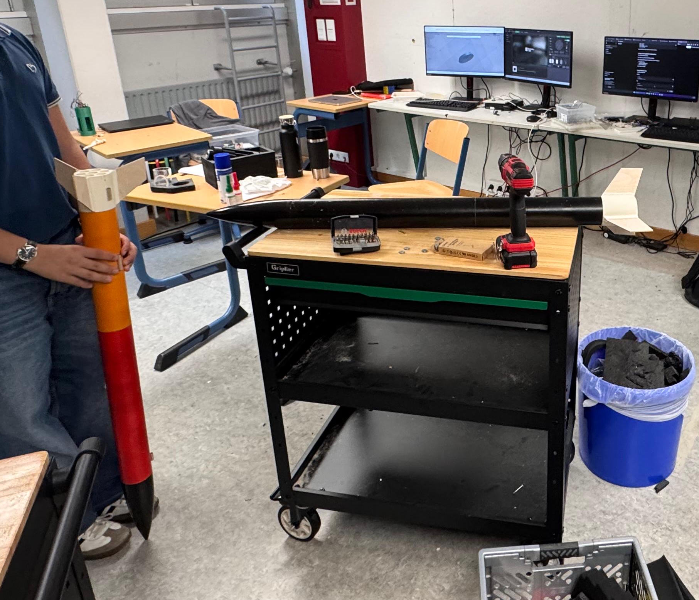

Phase III
The final rocket(s)
After our half-success during the second launch, we launched a deep investigation into why the engine/fin mount failed. What we found were bad print settings resulting in a failing component as the pressure escaped to the side rather than the top. This was quickly adjusted, leaving the remaining problem to be bad engines, which is completely out of our control.
To carry the experiments, we planned for a total of three rockets where two would serve as redundancies. Since one rocket was destroyed during the test launch, we had components for two rocket bodies remaining. At this time, the Board MPU was the only technological component left unfinished. The final objectives were building two identical rockets with the updated engine/fin mounts and finishing the Board MPU.
We ended up with one completely black rocket and one painted identically to the first big one - some form of tribute to the first prototype.

Fig 1: Finishing the two final rockets